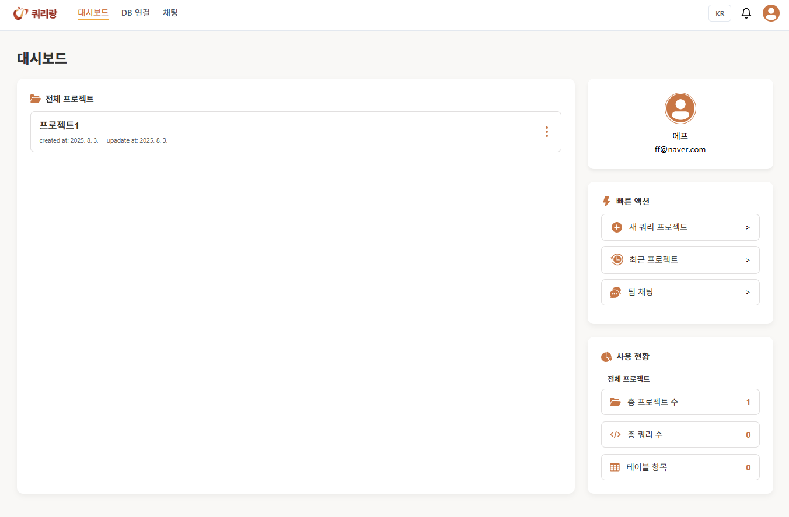
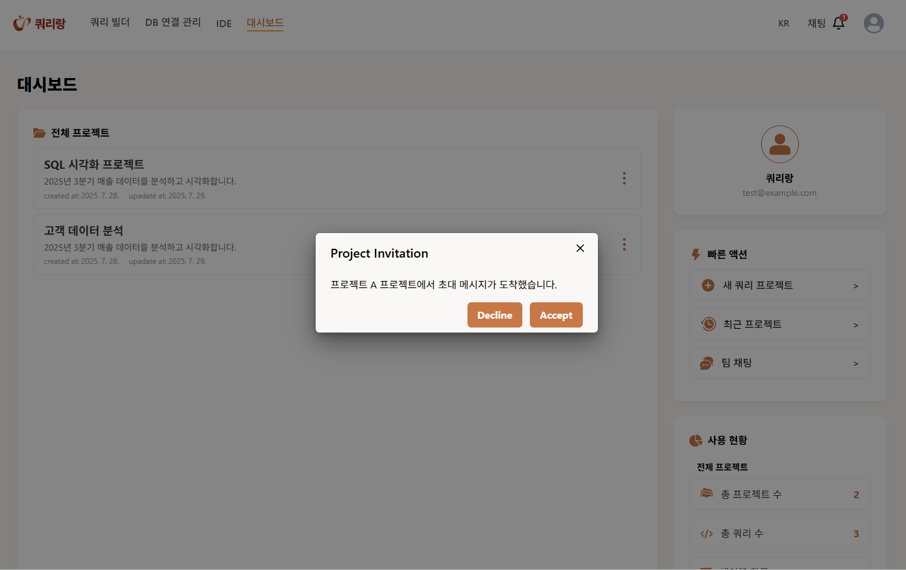

마이페이지
사용자의 기본 프로필과 정규화식(대문자1, 소문자1, 숫자1, 특수문자1을 포함하는 10자리 이상) 맞춘 비밀번호 변경, 회원탈퇴 및 프로젝트 수신/발신 목록 조회
내 기여: 해당 페이지 전체
대시보드
 DB연결 프로젝트 생성 및 수정, 삭제 외 각 프로젝트 별 IDE편집을 위한 전체 프로젝트 내역
내 기여: UI구현 일부 도움 및 수정, 프로젝트 멤버 초대기능 및 초대 시 상대의 알람으로 보류중인 모든 알람을 불러와 초대 및 수락 시 해당 프로젝트 멤버 반영, 최근 프로젝트 열람
DB연결관리
DB연결 된 프로젝트는 UI로 사용자의 권한 및 연결상태를 제공하고, 연결 안된 프로젝트는 새 연결 추가를 통한 DB연결
내 기여: 전체 UI구현 및, DB연결 안 된 프로젝트 선택 시 DB연결 관리 기능 모달 창 연결(api 연결작업 제외)
IDE
각 프로젝트 별 IDE 기능(api와 연결 실패)
내 기여: 디자인 및 IDE 폴더 생성, 삭제, 이름 수정, 언어 변경
채팅

프로젝트 별 그룹 채팅 및 초대된 프로젝트의 각 멤버들과 1:1 채팅방, 채팅 방 별 최근 대화 내역
내 기여: 해당 페이지 전체